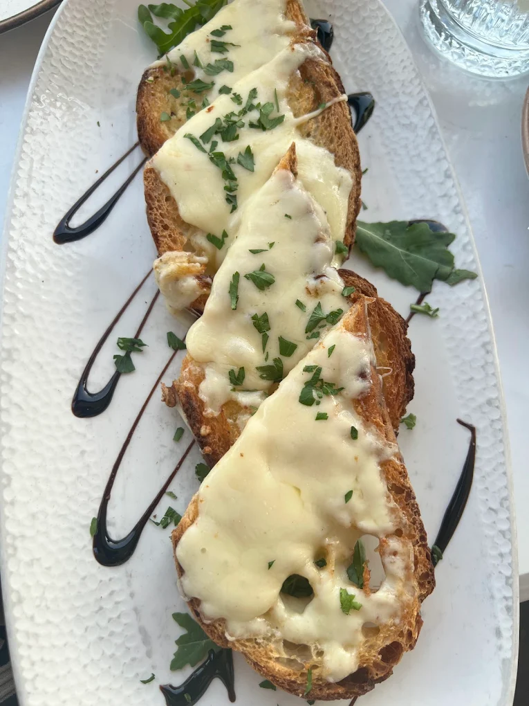

Gastronomy & Cafe Culture
Maltese culture is deeply integrated into its unique culinary style and magnificent buildings. Baroque features meet massive limestone ramparts engineered centuries ago by the legendary Knights of St. John.
Traditional Mediterranean Flavors
The local food scene presents a delicious fusion of Sicilian and Arabic influences. You must sample Pastizzi, flaky pastries filled with warm ricotta cheese or mushy peas. Other local culinary specialties include slow-cooked rabbit stew (Fenkata), savory Ftira bread, and fresh olive oil appetizers.

Giorgio's Cafeteria
An iconic staple in Malta's upscale coffee and food scene. Established as an essential social meeting ground along the golden shoreline walkway.
📌 Reference: Located right on the bustling waterfront, looking out across the Mediterranean Strand.

Outdoor Terrace Lounge
Enjoy premium coffee under the distinctive dark boutique umbrellas on the scenic promenade deck.

Gourmet Menu Selections
Artisanal dishes, savory appetizer platters, and fresh local pastries served daily with top-tier presentation.
Maltese Architecture
Malta's structures are highly detailed masterpieces built out of regional golden globigerina limestone blocks.

St. John's Co-Cathedral
A spectacular historic Roman Catholic co-cathedral located right in the heart of Valletta, built by the Knights of St. John between 1572 and 1577 as an iconic gem of high Baroque design.